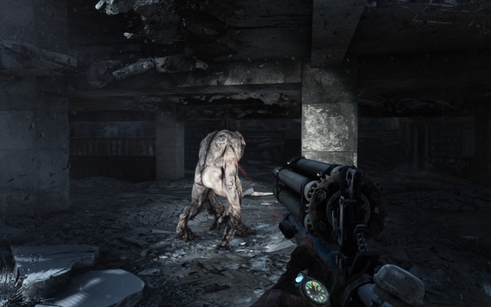

Avanzando Aleksei encuentra el cadaver de un soldado de la Hanza. Uno de los sitios más poderosos del metro. Viendolo se asusta pensando que si un soldado de tan bien entrenado no pudo sobrevivir a la biblioteca, que tendría el destino para él. Sin embargo, el soldado tenía su escopeta con 2 balas, lo que le da algo de esperanzas a aleksei. Camina hasta llegar a la zona de los mapas, en donde encuentra una ubicación escondida de una base secreta del antiguo gobierno ruso. Quizás ahí se fueron los desaparecidos, los planos hablan de un lugar lleno de armas y recursos para sobrevivir a cualquier apocalipsis. Aleksei se lleva el mapa, pero empieza a escuchar ruidos y cuando menos se lo espera, este observa a un bibliotecario acercandose a él. Quizás las balas no sean suficientes para acabar con esa bestia, pero quizás le den algo de tiempo para escapar por una venta, aunque la caída no será nada agradable.
